Portfolio Identity, Cover & Table of Contents
Your portfolio's identity is the sum of its design choices: cover, typography, color palette, and grid working together as a unified system. A strong identity makes your portfolio instantly recognizable and signals that every decision was intentional.
The Cover as First Impression
Your portfolio cover is viewed in the first 10 seconds of engagement. It must immediately communicate your design sensibility and professional identity. Think of the cover as a thesis statement for your visual language. It sets the tone for everything that follows.
7 Cover Typologies
Through analysis of hundreds of architecture and design portfolio covers, seven recurring compositional strategies emerge. Each represents a distinct approach to the cover problem: balancing identity, hierarchy, and visual impact within a single page. Understanding these typologies helps you make deliberate choices rather than defaulting to familiar patterns.
Type 01: Pure Minimal / Text-Only
Maximum whitespace as the primary compositional element. Typography is the sole visual content. Text occupies less than 8% of the page area, and the surrounding void is not residual space. It is the dominant design element. The emptiness signals restraint and editorial confidence.
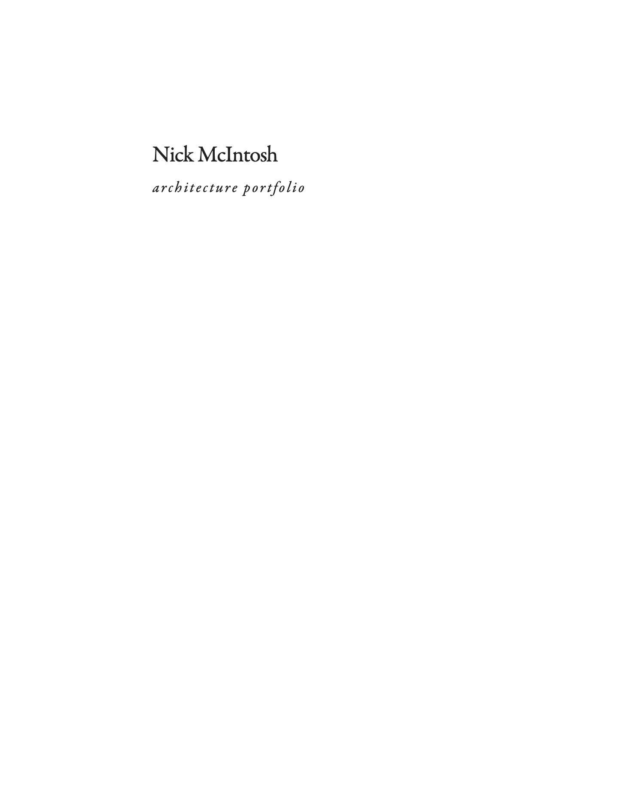
Cover: Nick McIntosh
The text cluster is almost never centered. It gravitates toward the lower-right quadrant, creating a diagonal tension against the upper-left void. This asymmetry activates the otherwise static whitespace. Title, subtitle, and metadata are grouped as a single compact unit, with internal hierarchy achieved through weight (bold to regular to light) and progressive scale reduction.
KEY PRINCIPLES: Text occupies less than 8% of page area. Whitespace IS the design, not leftover space. Asymmetric placement creates diagonal tension across the field. Type hierarchy compressed into a compact cluster using weight, size, and value shifts within approximately 3 lines. No imagery, no decoration. The compositional confidence comes entirely from restraint.
Type 02: Dark Ground / Inverse
Figure-ground inversion through dark surface and light typography. In conventional covers, the white page acts as neutral ground. Here, the dark surface becomes an active presence. A material void from which typographic elements emerge as luminous figures. The page shifts from carrier to protagonist.
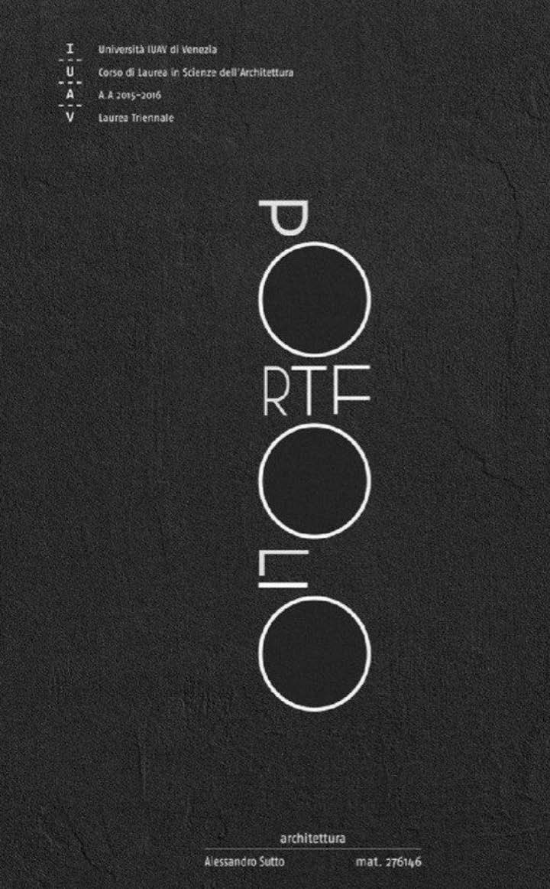
Cover: Alessandro Sutto, IUAV Venezia
Light type on dark ground produces a perceptual glow. Letterforms become radiant figures, not just information. This shifts the role of text from semantic content to graphic object. The title word is frequently broken apart, rescaled, or interleaved with geometric primitives (circles, rectangles). Individual letters are treated as autonomous compositional elements rather than components of readable text. Dark covers almost always introduce visible surface texture. Paper grain, concrete, noise. The tactile quality prevents the dark field from reading as a flat digital screen and grounds it in physicality.
KEY PRINCIPLES: Inverts figure/ground convention. Dark page becomes active void, light type becomes figure. Texture (paper grain, concrete, noise filter) adds material presence to the digital format. Letterforms frequently deconstructed. Scaled, fragmented, mixed with geometric shapes. Dramatic atmospheric presence. Signals confidence and a conceptual design sensibility.
Type 03: Hero Image / Central Focal
Three-band vertical structure with a single dominant image as compositional anchor. A single architectural image. Rendering, photograph, or isometric drawing. Occupies 55-65% of the total page area. Centered or slightly offset vertically, this image must be strong enough to represent the entire body of work. It IS the portfolio's visual identity.
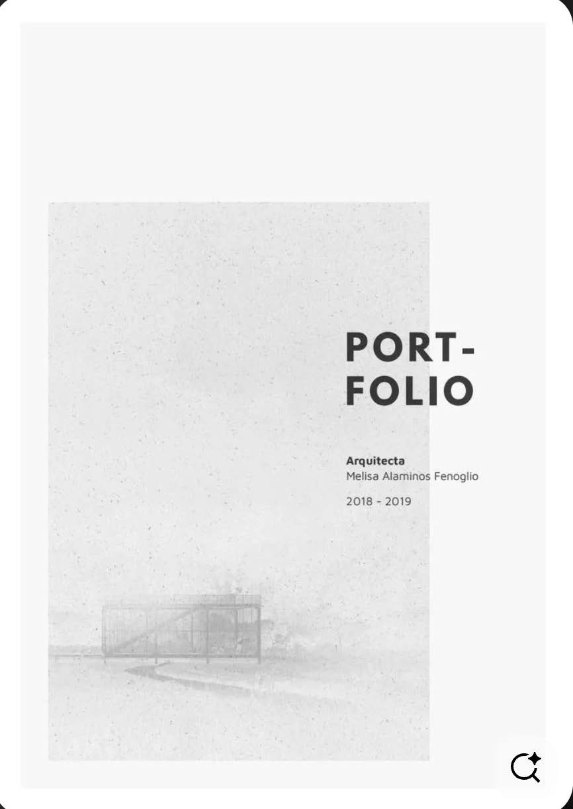
Cover: Melisa Alaminos Fenoglio
The composition divides into three horizontal zones: Header (title/subtitle, approximately 17%), Image (dominant focal, approximately 58%), and Footer (name/date, approximately 25%). These bands rarely overlap. Text remains small and peripheral. It anchors corners without competing with the image. Metadata elements (year, volume number, institution) occupy the corners opposite the title, establishing a rectangular framework that stabilizes the overall composition. Corner placement (top-left title vs. top-right year) creates secondary diagonal tension.
KEY PRINCIPLES: Three-band vertical division: Header to Image to Footer. Single image takes 55-65% of page and carries the portfolio's visual identity. Text remains peripheral and small. Anchors corners without competing with the image. Image selection is critical: it must represent the strongest or most characteristic project.
Type 04: Bleed Image + Type Band
Two-zone composition: an edge-bleeding image paired with a distinct typographic band. The image touches three page edges (top, left, right). Implying continuation beyond the frame. This creates immersive scale and suggests the architectural content exceeds the page boundary.
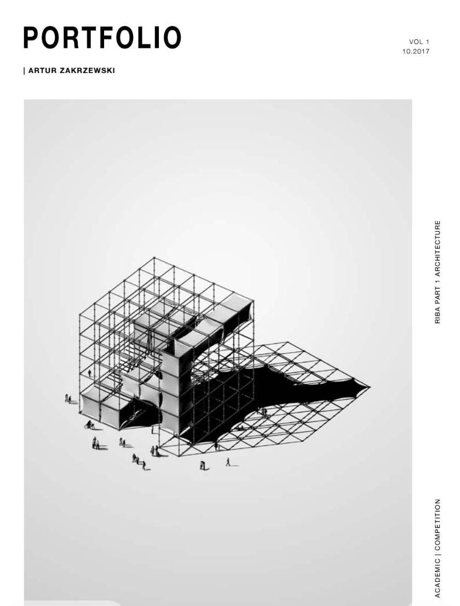
Cover: Steven Rubio
The sharp boundary between image zone and type zone is the most critical compositional element. This edge generates the primary visual tension. The abrupt transition, not a gradient or fade, creates structural clarity and graphic force. The type zone contains bold, large-scale title text that counterweights the visual mass of the image. Corner elements (issue numbers, dates) anchor the band's extremities, establishing a micro-grid. Variant orientations include horizontal split (top/bottom, most common), vertical split (left image / right type band), diagonal split with an angled boundary, and image bleeding from one side only.
KEY PRINCIPLES: Two-zone composition: image zone (60-70%) + typographic band (30-40%). Hard dividing edge creates the primary structural tension. Never a gradient or fade. Image bleeds to page edges, implying continuation beyond the frame boundary. Type band uses bold title + corner anchoring to counterweight the image's visual mass.
Type 05: Scattered Collage / Thumbnail Array
Distributed multi-image composition with irregular spacing and variable scale. Thumbnails are deliberately different sizes. Ranging from very small to medium. This scale variation produces visual rhythm and establishes an implicit hierarchy among projects without explicit labeling or numbering.
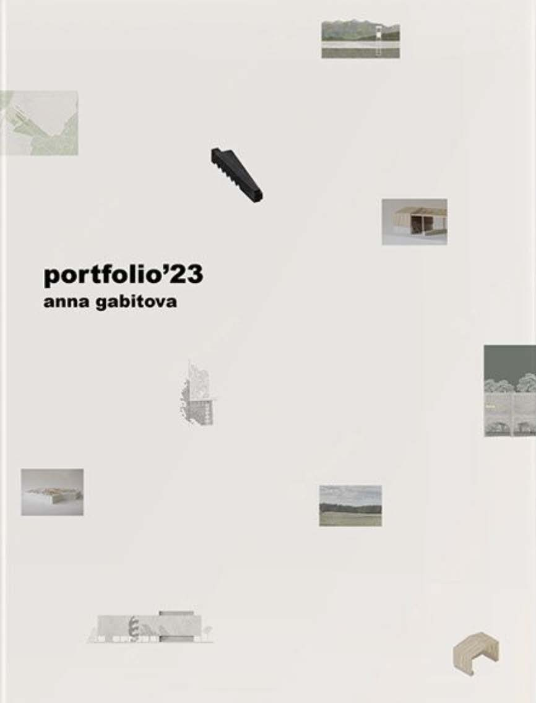
Cover: Anna Gabitova
The gaps between thumbnails vary. This is NOT a rigid grid arrangement. The composition should feel curated, like objects arranged on a studio table. Proximity implies relationship; distance implies categorization. Thumbnails are distributed to the edges of the page, not clustered in the center. This activates the entire field. No single focal point exists; the eye wanders across the full composition. The title is positioned among the thumbnails as one object among many, not separated into its own band or zone. The title participates in the collage rather than governing it from a distinct position.
KEY PRINCIPLES: Thumbnails distributed across the entire field. No single focal point, activates all edges. Variable scales create visual rhythm and implicit project hierarchy without explicit labels. Irregular spacing feels curated, not computed. Proximity implies thematic relationship. Title floats among images as one compositional element, not in a separate typographic zone.
Type 06: Grid / Pattern System
Repeating geometric motif as visual identity. Systematic logic replaces imagery. A single minimal unit, cross, dot, plus mark, or tick, is repeated uniformly across the field. The individual unit is intentionally inconspicuous; the emergent field effect is what registers. Module choice often references architectural drafting conventions.
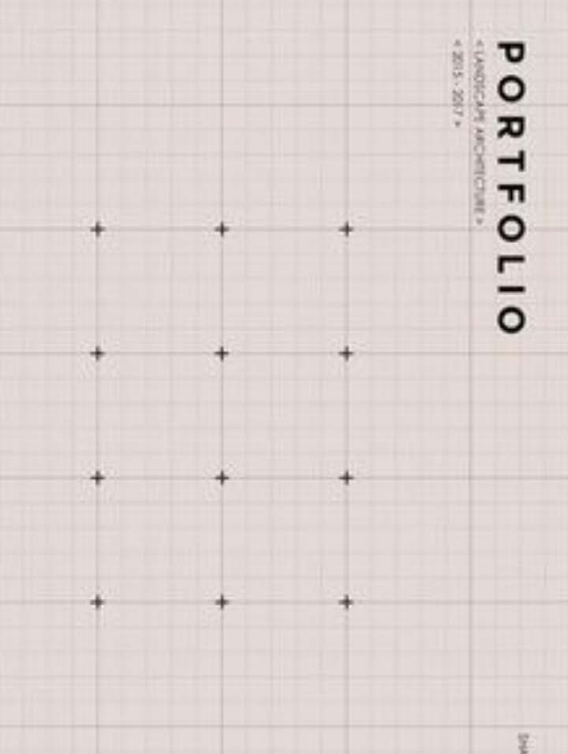
Student portfolio cover example
Horizontal and vertical spacing between units is consistent and uniform. The strict regularity IS the design. It signals systematic thinking, precision, and methodological rigor. Order over individual expression. No imagery is needed. The repeating system replaces the architectural image as the cover's visual identity. This approach is strongly associated with landscape architecture, urban design, and computational design portfolios. Letter-spacing in the title is calibrated to match the grid interval, so the text reads as part of the pattern system, not as an element placed on top of it. Typography and pattern share the same generative logic.
KEY PRINCIPLES: Single minimal unit repeated at equal intervals across the field. The field effect IS the design. Typography adopts the grid's spacing logic. Letter-spacing calibrated to grid interval. Regularity signals systematic thinking and methodological rigor. Order over expression. Pattern replaces imagery as visual identity. Often references architectural drafting conventions.
Type 07: Abstract Line / Geometric Composition
Freeform curves, intersecting lines, and geometric primitives as compositional elements. A single large sweeping arc spans the full page, establishing the dominant directional energy. The curve is the heaviest stroke weight. It functions as the compositional armature around which all other elements are organized.
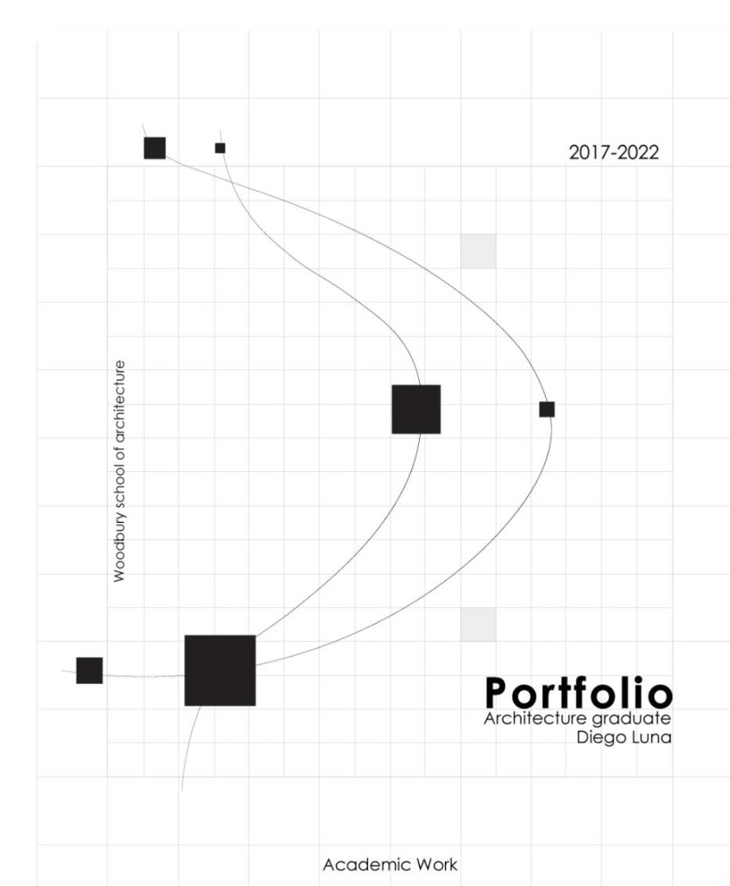
Cover: Diego Luna, Woodbury School of Architecture
A straight line or second curve intersects the primary arc, creating a dialogue between curve and line. The tension between these elements generates compositional dynamism. Where geometric elements cross becomes the natural visual anchor. Often marked with a dot or annotated with dates/numbers. This intersection point grounds the otherwise abstract composition and gives the eye a resting point. The title sits in the negative space between geometric elements. A natural clearing where text can breathe. The geometry defines where text belongs; placement feels inevitable, not arbitrary. Stroke weight hierarchy (primary heaviest, secondary medium, tertiary ghost) creates depth without color.
KEY PRINCIPLES: 2-3 geometric elements (arcs, lines) with a clear stroke weight hierarchy. Intersections function as visual anchors. Marked with dots or date annotations. Text sits in the quiet zone. The negative space pocket created by the geometry. Freeform and deliberate, not systematic. Each element is a considered compositional decision.
Choosing Your Cover Strategy
Your cover typology should grow out of your work, not be selected from a menu. Consider what your strongest projects emphasize: if your work is process-driven and conceptual, a minimal or abstract line approach may be natural. If your strongest asset is a single powerful rendering, the hero image or bleed approach lets that image carry the identity. If you have a diverse body of work across scales and typologies, a scattered collage previews the range. Grid and pattern systems suit methodical, research-oriented portfolios. Particularly in landscape architecture, urban design, and computational work.
PRO TIP: The best portfolio covers feel like they grew out of the work itself, not like a template applied from outside. Before designing your cover, lay out your strongest 3-5 project spreads and look for the visual DNA that connects them. Your cover should distill that shared language into a single page.
The Table of Contents as Design Decision
The table of contents is the first design decision the reader encounters after the cover. It reveals how the designer thinks about sequence, hierarchy, and invitation. A well-designed TOC does more than list page numbers: it establishes the portfolio's organizational logic, previews its visual language, and sets expectations for the reading experience that follows.
6 TOC Typologies
Through analysis of architecture and design portfolio tables of contents, six recurring compositional strategies emerge. Each represents a distinct approach to the navigation problem: balancing information density, visual engagement, and structural clarity within one or two pages. Understanding these typologies helps you choose a TOC strategy that reinforces your portfolio's identity rather than defaulting to a generic numbered list.
TOC Type 01: Illustrated Section Grid
Architectural vignettes organized in a modular grid separated by bold vertical dividers. Transforms the TOC into a visual map of the portfolio's contents. The two-page spread is divided into equal vertical columns by thick black rules, with each column containing a B&W architectural silhouette illustration at top and project metadata stacked below.
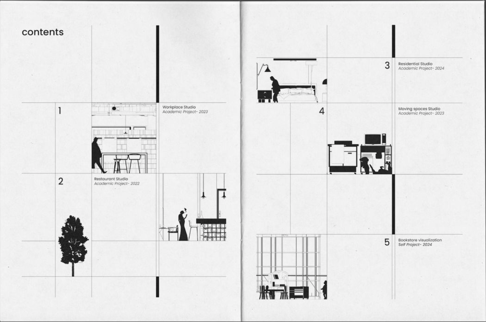
Two-page spread with vignette columns and project metadata
Oversized section numbers anchor each column; project title, institution, and page numbers follow in descending weight. The illustration dominates the visual hierarchy. Section-cut vignettes function as a preview device. The reader navigates by recognizing building silhouettes before reading text.
KEY PRINCIPLES: Two-page spread divided into equal vertical columns by thick black rules. B&W architectural silhouette illustration at top with project metadata stacked below. Oversized section numbers anchor each column. Uses section-cut vignettes as a preview device. The reader navigates by recognizing building silhouettes before reading text. Best for architecture-focused portfolios with 4–8 major projects that can be represented by iconic silhouettes or section drawings.
TOC Type 02: Multi-Column Text Index
A purely typographic, information-dense table of contents modeled on editorial indexes. Prioritizes metadata hierarchy over imagery. Three-column layout per page with entries by numbered sequence. Each entry cascades through category, institution, bold project title, description, collaborators, and page number.
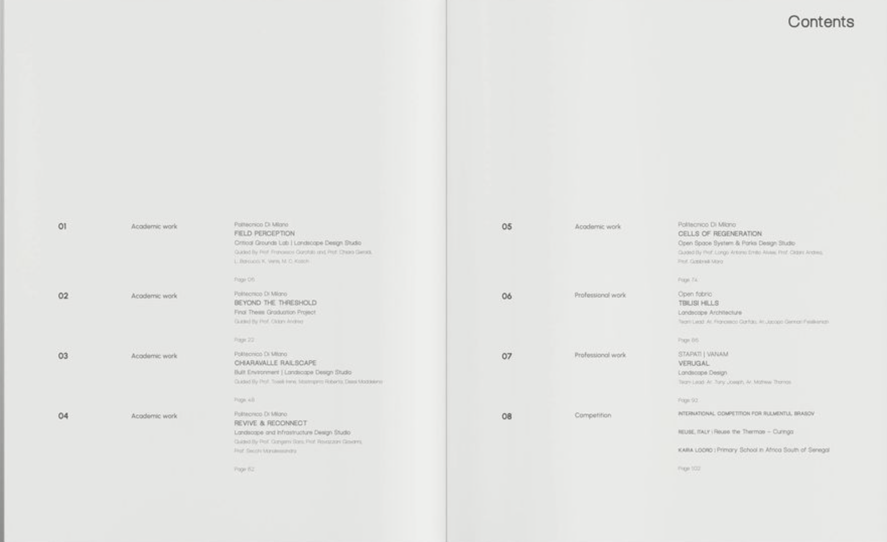
Three-column typographic layout with cascading metadata hierarchy
Hierarchy relies entirely on typographic weight and size. Bold titles, regular descriptions, light credits. No decorative elements. Density signals thoroughness and editorial rigor. The absence of images forces the reader to discover projects through written descriptions.
KEY PRINCIPLES: Three-column layout with entries cascading through category, institution, bold project title, description, collaborators, and page number. Relies entirely on typographic weight and size. No decorative elements. Density signals thoroughness and editorial rigor. Best for portfolios with many projects (10+) or extensive metadata per entry, especially academic or research-heavy work.
TOC Type 03: Thumbnail Gallery Row
A single horizontal row of equally-sized project thumbnails. Maximizes whitespace and treats the TOC as a curated gallery strip. Page numbers and bold project titles sit directly beneath each thumbnail. Images are the primary entry point, with text kept minimal. Just project name and location.
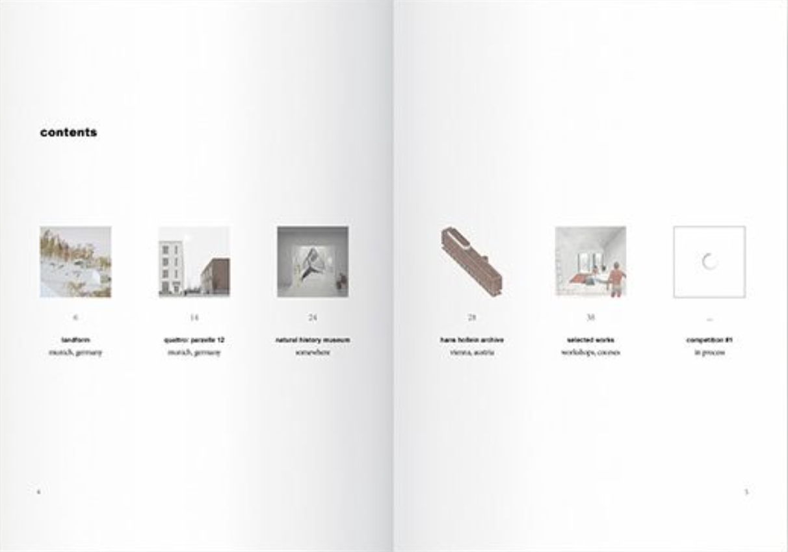
Horizontal row of equally-sized project thumbnails with minimal text
Extreme whitespace above and below the single row creates a sense of curation and deliberateness. Each thumbnail acts as a visual bookmark, forcing the viewer to engage visually before reading.
KEY PRINCIPLES: Single horizontal row of uniformly sized project images spanning full page width. Page numbers and bold project titles sit directly beneath each thumbnail. Images are the primary entry point. Minimal text forces visual engagement first. Extreme whitespace creates a sense of curation. Best for portfolios with 5–7 visually distinct projects where a single image can represent each body of work effectively.
TOC Type 04: Literary Chapter Index
Oversized serif page numbers and letter-spaced chapter headings. A book-design approach that frames the portfolio as a published monograph. Large serif page numbers (11, 91, 155...) sit at top of each entry, followed by letter-spaced section headings in caps, then italic author names and essay titles below.
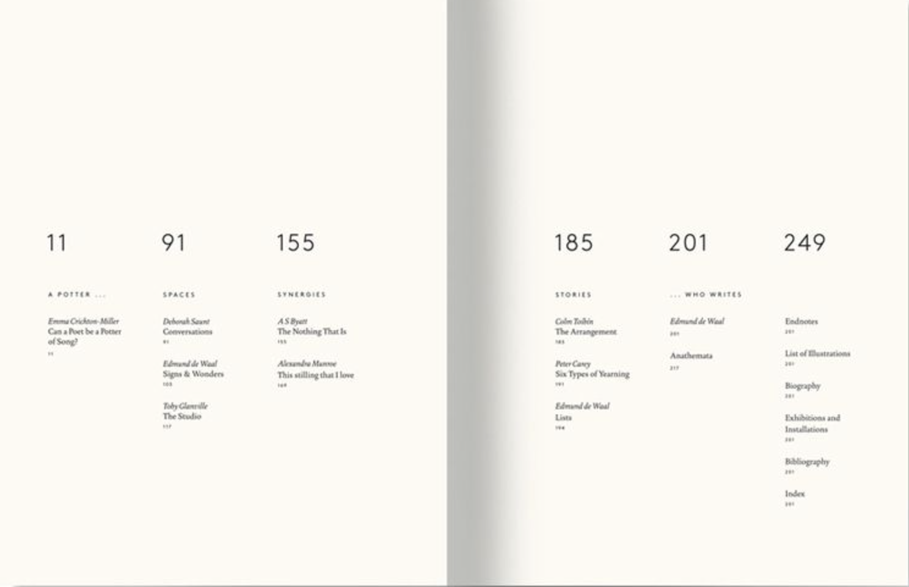
Oversized serif numerals with letterspaced chapter headings
The oversized numeral is the primary anchor. It acts as both navigation aid and compositional element. Section titles use letterspacing as a weight alternative to bold. Serif type and italics signal intellectual seriousness and curatorial intent. Borrows from traditional book design and literary publishing.
KEY PRINCIPLES: Large serif page numbers at top of each entry, followed by letter-spaced section headings in caps, then italic author names and essay titles below. The oversized numeral acts as both navigation aid and compositional element. Serif type and italics signal intellectual seriousness. Best for portfolios organized as monographs, thematic essay collections, or work with significant written/theoretical components.
TOC Type 05: Bold Number Column Cards
Vertical columns with oversized colored entry numbers, thumbnail images, and structured metadata. A magazine-editorial card system. Vertical columns are divided by thin rules. Each column is a self-contained card with an oversized colored number (01–05), bold name, subtitle/role, thumbnail image, and date.
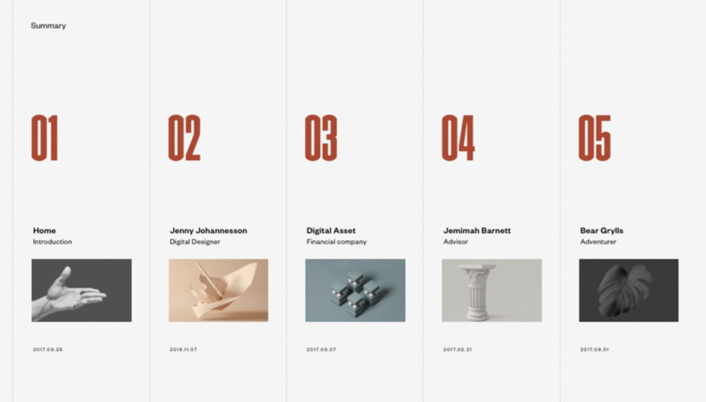
Vertical card columns with oversized red numbers and thumbnails
The large colored number dominates each card, followed by the bold title, then metadata in lighter weights. The thumbnail adds visual variety within a strict grid. Column structure creates rhythm while accent color numbers add energy and wayfinding. Each entry functions as a mini-profile or editorial card.
KEY PRINCIPLES: Vertical columns divided by thin rules, each a self-contained card with oversized colored number, bold name, thumbnail image, and date. The large colored number dominates each card. Column structure creates rhythm while accent color numbers add energy. Best for portfolios with a small, curated set of projects (3–6), especially those emphasizing people, roles, or process alongside final work.
TOC Type 06: Narrative + List Hybrid
A two-page spread pairing a thematic essay or statement page with a traditional contents list. Integrates storytelling into navigation. The left page has a thematic essay with an architectural drawing. The right page is a contents list with bold titles, subtitles, and right-aligned page numbers. An accent header anchors the list.
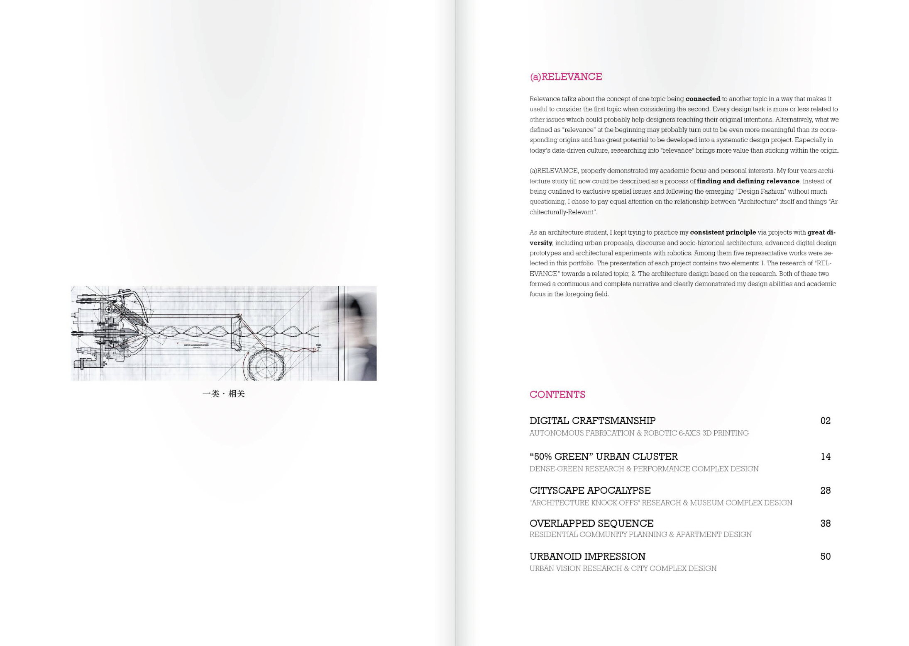
Essay spread with drawing (left) paired with structured contents list (right)
The essay page establishes conceptual framing (why), while the list page provides navigation (where). The accent header bridges the two halves. Merges the TOC with an introduction, giving the reader context before they navigate. The drawing acts as both illustration and conceptual anchor.
KEY PRINCIPLES: Left page has a thematic essay with an architectural drawing. Right page is a contents list with bold titles, subtitles, and right-aligned page numbers. An accent header anchors the list. The essay page establishes conceptual framing while the list page provides navigation. Best for portfolios emphasizing process, narrative, or conceptual frameworks. Especially those with a strong design thesis or curatorial statement.
Choosing Your TOC Strategy
Your table of contents should reinforce the same design logic as your cover and spreads. If your cover uses a minimal, text-driven approach, a multi-column text index or literary chapter index will feel cohesive. If your cover leads with strong imagery, the illustrated section grid or thumbnail gallery row extends that visual identity into the navigation. Consider how many projects you have, how much metadata each needs, and whether your portfolio leans editorial or expressive. The TOC is not just a directory. It is the first interior page that demonstrates your ability to organize information with clarity and intention.
PRO TIP: Design your TOC and cover together as a system. The best portfolios treat the first three pages. Cover, inside cover, and table of contents. As a unified sequence that establishes identity, sets tone, and invites the reader into the work. A TOC that contradicts the cover's design language signals inconsistency rather than range.